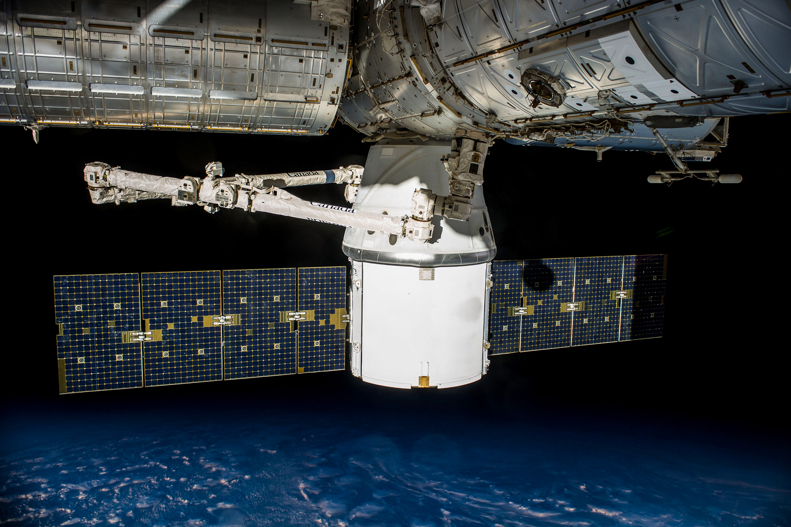
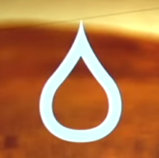
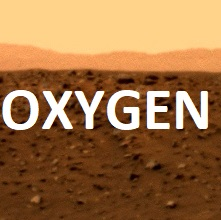
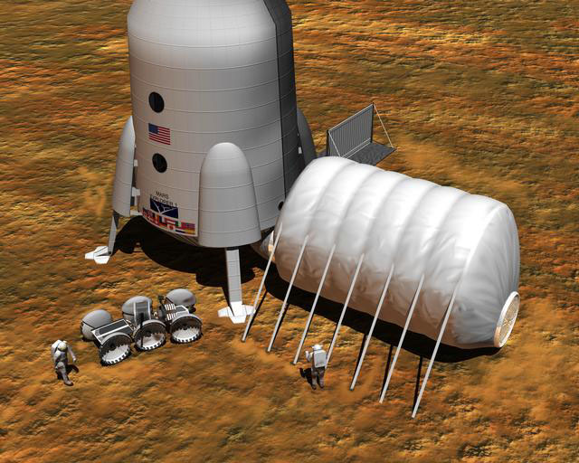
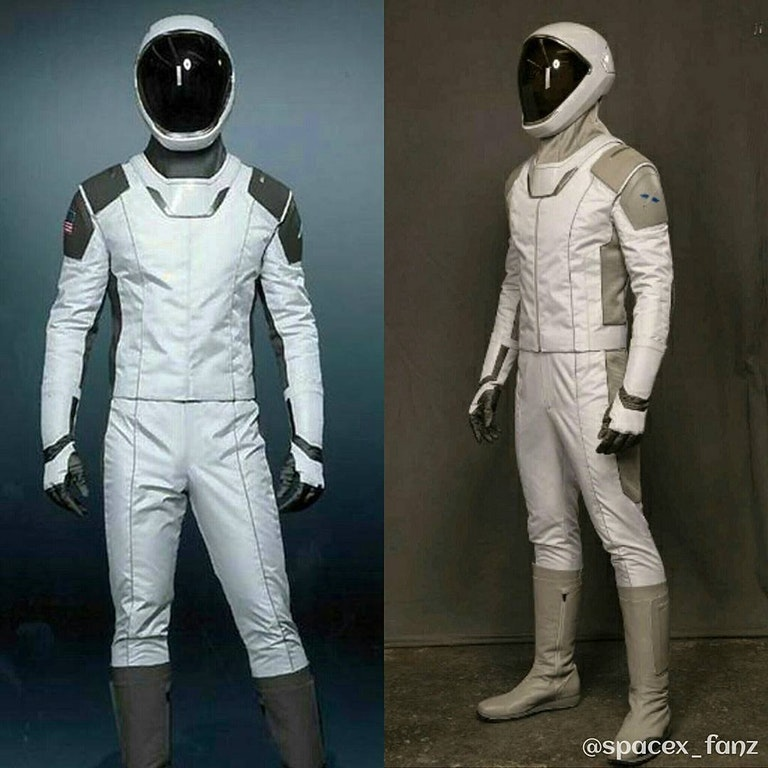

Élet a Marson
Mélyűri Közlekedés:
 |
A jelenlegi űrjárműveink nem elég fejlettek, hogy bolygóközi utánpótlást tudjanak biztosítani, ezek fejlesztése, viszont már folyamatban van. Eljutni a Marsra nem egy könnyű dolog, ugyanakkor felmerül egy újabb kérdés: Valóban tudnánk ott élni? Szükségletek a Marson való élethez:
|
| Elem | Leírás | |
|---|---|---|
Élelem |
Nos, lényegében hidroponikus növénytermesztést fogunk alkalmazni. Persze élelmiszerellátásunk csupán 15-20%-át fogjuk tudni előállítani, amíg nincs folyóvizünk. Amíg ez nem történik meg, addig ellátásunk nagy része a földről fog érkezni és nagyrésze szárított élelem lesz! |
|
 |
Víz |
A Marson való élet fenntartásához, vizet kell találnunk a bolygón! A Mars, eddig igen száraznak bizonyult, olyan mintha az egész bolygó egy óriási sivatag lenne. Ezzel ellentétben kiderült, hogy nem. A bolygón lévő talaj 1-60%-ban tartalmaz vizet, továbbá a bolygó körül keringő egységek bebizonyították, hogy a Marson található kráterperemeket jég borítja. Ezen felül bebizonyították, hogy a felszín alatt nagy mennyiségű, víz és gleccser található. Valójában, ha a Marsi pólusok jégsapkája elolvadna, akkor a bolygó java részét 9 méteres víz borítaná. |
 |
Oxigén |
Oxigén, levegő: Meglepő, de arra is létezik megoldás hogy honnan szerezzünk lélegezhető, egészséges levegőt. Az MIT egyik tudósa előállt egy Moxie nevezetű géppel, ami lényegében egy fordított üzemanyagcella. Mivel a marsi légkör javarészt széndioxidból áll – és a széndioxid 78%-a lényegében oxigén – így a gép a Marsi légkört beszippantva oxigént pumpál ki. Érdekesség, hogy a következő, Marsjáró, amit jelenleg a NASA a vörös bolygóra tervez küldeni, már rendelkezni fog egy ilyen gépezettel, tesztelés céljából. (2020) |
 |
Menedék |
Kezdetben használhatunk felfújható, nyomás alá helyezhető épületeket. Ez persze csak napközben működne, mivel túl magas a nap, és kozmikus sugárzás. Éppen ezért a föld alá kell költöznünk! Az egyik opció hogy a marsi talajból téglákat égetünk (készítünk), és vastag fallal vesszük körbe a fontos létesítményeket, vagy leköltözhetünk a föld alá is, lávacsövekbe, vagy barlangokba is, amikből akad bőven. |
 |
Ruházat |
A földön több méteres levegőréteg nehezedik ránk, ami 6 KPa nyomóerőt gyakorol a testünkre. Ezt gyakorlatilag folyamatosan ellensúlyozunk. A Marson viszont lényegében nincs légköri nyomás. Ezért olyan ruhákra lesz szükségünk, ami életben tart minket, blokkolja a káros sugarakat, melegen tart, és mégis kényelmes viselet. |